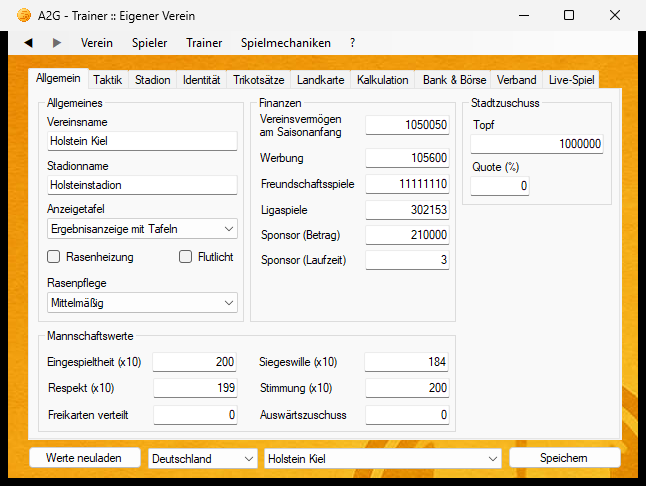
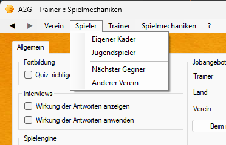
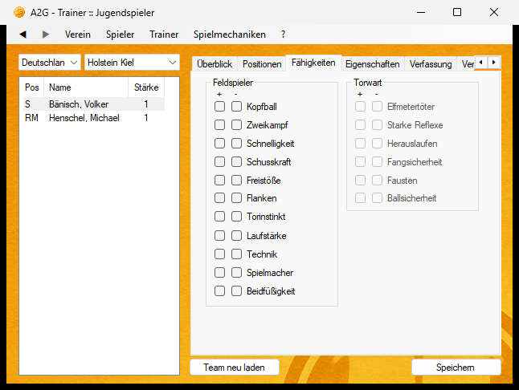
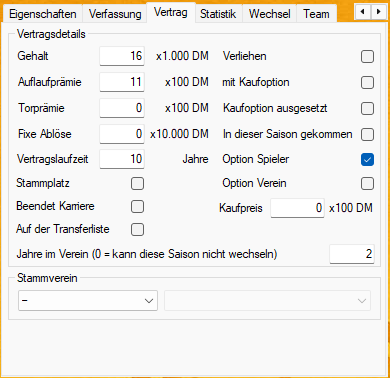
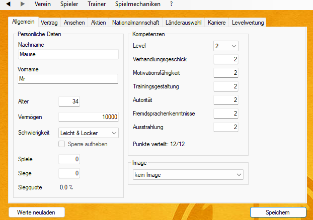
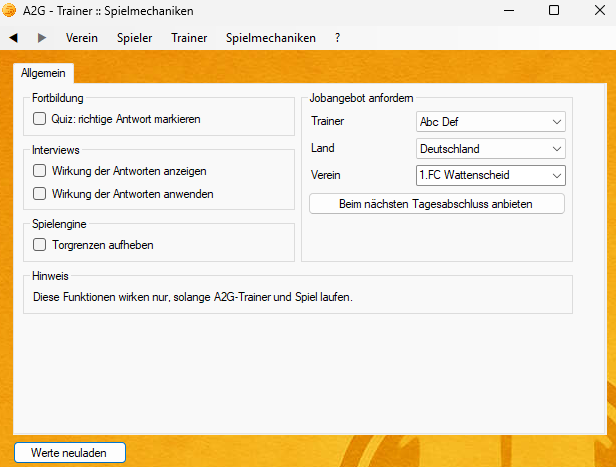

Neueste Version herunterladen
Version wird geladen…Enthält den Trainer (eine .exe für Original, GOG und 2007er-CD), die Cheat-Engine-Tabellen und das Änderungsprotokoll. Der Link zeigt immer auf den aktuellsten Release.
Ein Trainer (Editor) für Anstoss 2 Gold, kompatibel mit der Original-CD, der GOG-Version und der 2007er-CD, lauffähig von Windows XP bis Windows 11 und unter Wine/Proton.
Diese Onlinehilfe erklärt alle Funktionen des Trainers im Detail. Wählen Sie oben in der Menüleiste oder links in der Liste einen Bereich:
Vereinsname, Stadion, Finanzen, Fans, Trikots und Landkarte bearbeiten.
Kader, Gegner und jeden anderen Verein editieren: Fähigkeiten, Vertrag, Verfassung.
Die Jugend jedes Vereins, ohne Umweg über das Spiel.
Manager, Aktien, Nationalmannschaft, Ländereinstellungen und Hot-Seat-Unterstützung.
Quiz- und Interviewhilfe, Torgrenzen und Jobangebote, direkt im laufenden Spiel.
Kleine Kniffe, die Zeit sparen.
Häufige Fragen und Lösungen, inklusive Logdatei.
Was sich von Version zu Version geändert hat.
Erreichbar über . Die Vereinsansicht öffnet sich im Hauptfenster mit zehn Registerkarten.
Über Werte neuladen werden die aktuellen Werte erneut aus dem laufenden Spiel gelesen (z. B. nach einer Änderung im Spiel selbst), über Speichern werden Ihre Eingaben zurückgeschrieben.

Der Trainer schreibt die Werte in den Vereinsdatensatz und in jede Kopie, die das Spiel gerade geladen hat.
Die Einstellungen, die sonst nur der Dateneditor des Spiels vor Spielbeginn kennt, hier für das laufende Spiel.
Erreichbar über das Menü . Für jeden Spieler öffnet sich eine Detailansicht mit neun Registerkarten.

Für Feldspieler- und Torwart-Fähigkeiten gibt es jeweils zwei Kontrollkästchen pro Zeile: + für eine positive und - für eine negative Ausprägung der Fähigkeit.


Erreichbar über . Nutzt dieselbe Detailansicht mit denselben Registerkarten wie der eigene Kader.
Manager-Daten, Aktienportfolio und Ländereinstellungen für die aktuelle Karriere.

Nationaltrainer und Nationalkader gibt es in der Originalversion sowie in GOG und 2007er-CD, sobald der Trainer deren Adressen bestätigt hat.
Erreichbar über . Diese Funktionen ändern nicht die Daten des Spielstands, sondern das laufende Spiel selbst; im Spielstand lässt sich davon nichts speichern. Die Häkchen wirken nur, solange Trainer und Spiel laufen: Beim Beenden des Trainers stellt er den Originalcode wieder her, nach einem Neustart des Spiels sind sie aus. „Werte neuladen“ liest den Stand des Spiels neu, etwa nach einem Neustart des Spiels.

Ein paar Kniffe rund um den Trainer, die im Alltag Zeit sparen.
Häufige Fragen rund um Verbindung, Speichern und Kompatibilität.
Vollständige Versionshistorie, live geladen von den GitHub Releases.
Changelog wird geladen…